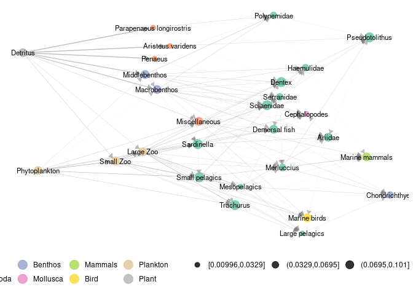
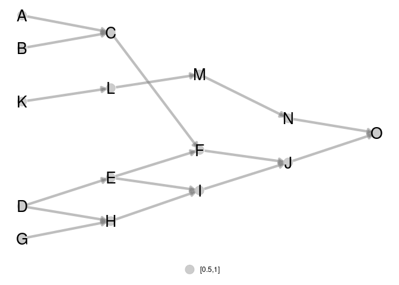

Marc Ohlmann 22/6/2021
Description
Description: A collection of tools to represent and analyse trophic networks in space accross aggregation levels. The package contains a layout algorithm specifically designed for trophic networks, using dimension reduction on diffusion kernel and trophic levels with R.
Dependencies
metanetwork depends on:
- igraph
- Matrix
- Matrix.utils
- ggplot2
- dplyr
- GGally
- network
- ade4
- intergraph
- sna
- visNetwork
Package installation
- Download the package from the gitlab page
- Install from source or using devtools
What is a metanetwork ?
In ecological networks literature, metanetwork refers to a set of networks in space. In R package ‘metanetwork’, we stick to a widespread (however restrictive) case:
- a potential interaction network (the metaweb, can be built using expert knowledge)
- local abundance tables, local networks are then induced subgraph of the metaweb by local abundances
Additional information might be considered (and used in ‘metanetwork’) as:
- a trophic table indicating a hierarchy of nodes of the metaweb, in order to study the metanetwork at different aggregation levels
- a qualitative covariable table, in order to average local networks for each value of the covariable
Pyramid example
Generating pyramid data set
Generating the metaweb an representing it using ‘ggnet2’
We first generate a pyramid network using ‘igraph’ and represent it using ‘ggnet2’
library(igraph)
library(network)
library(intergraph)
library(GGally)
n = 5
#generate a lattice
g = igraph::make_lattice(dim = 2,length = n,directed = T)
#deleting nodes and edges
nodes_to_rm = c()
for (k in 1:(n-1)){
nodes_to_rm = c(nodes_to_rm,((k-1)*n+1):(k*n - k))
}
g = delete_vertices(g,nodes_to_rm)
g = delete_edges(g,c("7|12","8|13","9|14","2|5"))
V(g)$name = LETTERS[1:vcount(g)]
#representing the lattice using ggnet package
network = asNetwork(g)
ggnet2(network, arrow.size = 7,size = 3 ,arrow.gap = 0.025, label = T)Notice that ‘ggnet2’ default layout algorithm (Fruchterman-Reingold algorithm, a force directed algorithm) is non-reproducible and non-oriented: x-axis and y-axis do not have any interpretation
ggnet2(network, arrow.size = 7,size = 3 ,arrow.gap = 0.025, label = T)
Building a metanetwork object
From the lattice metaweb and abundance table, build a S3 object of class ‘metanetwork’ using build_metanetwork
#building metanetwork object
meta0 = build_metanetwork(metaweb = g,abTable = presence)
class(g)## [1] "igraph"
class(meta0)## [1] "metanetwork"method print prints a summary of the considered metanetwork.
print(meta0)## object of class metanetwork
## metaweb has 15 nodes and 16 edges
## 2 local networks
## single resolution availableHandling metanetworks
the class ‘metanetwork’
A metanetwork object consists in a list of ‘igraph’ objects:
- metaweb, the metaweb used to build the metanetwork, an ‘igraph’ object with node attribute
$abindicating the local relative abundance of each node and graph attribute$nameindicating"metaweb" - local networks, a list of ‘igraph’ objects with node attribute
$abindicating the local relative abundance of each node in each network and graph attribute$nameindicating local network names, that is rownames of the abundance table.
meta0$b$name## [1] "b"
meta0$metaweb$name## [1] "metaweb"##
## 0.0833333333333333
## 12##
## 0.05 0.1
## 10 5metaweb node relative abundances are the mean of the local relative abundances
computing trophic levels
metanetwork package enables 2D network representation with x-axis equals to trophic levels. To compute trophic levels, metanetwork implements the method describe in: MacKay, R. S., S. Johnson, and B. Sansom. “How directed is a directed network?.” Royal Society open science 7.9 (2020): 201138.
To get a solution of dimension 1 (and not of higher dimension), the metaweb needs to be connected. Metanetwork package assumes the metaweb to be connected.
A method compute_trophic_levels allows to compute trophic levels for metanetwork objects.
#compute trophic levels for metaweb and local networks
meta0 = compute_trophic_levels(meta0)Once trophic levels computed, each node of networks of the considered metanetwork have a node attribute $TL
#trophic levels
V(meta0$metaweb)$name## [1] "A" "B" "C" "D" "E" "F" "G" "H" "I" "J" "K" "L" "M" "N" "O"
V(meta0$metaweb)$TL## [1] 0.000000e+00 0.000000e+00 1.000000e+00 4.440892e-16 1.000000e+00
## [6] 2.000000e+00 4.440892e-16 1.000000e+00 2.000000e+00 3.000000e+00
## [11] 0.000000e+00 1.000000e+00 2.000000e+00 3.000000e+00 4.000000e+00Representing metanetworks
Two layout methods specifically designed for trophic networks are implemented in metanetwork. In both methods, x-axis is the trophic level. Y-axis is computed by reducing diffusion graph kernel, measuring similarity between nodes. The linear method is a kernel based PCO constrained by the trophic level (using package ‘ade4’). In metanetwork, it is called "TL-kpco".
The non linear is a modification of t-sne algorithm. In this modified algorithm implemented in metanetwork package, high dimension similarity matrix is the diffusion kernel. Then t-sne optimisation process runs by constraining the first axis (x-axis) to be equal to the trophic level. In metanetwork, it is called "TL-tsne".
Diffusion graph kernel
Diffusion kernel is a similarity matrix between nodes according to a diffusion process. Let  be a directed network,
be a directed network,  its adjacency matrix. We note:
its adjacency matrix. We note:  .
.
The laplacian matrix is defined as:
The diffusion kernel is defined as (Kondor & Lafferty, 2002):
with  a positive parameter. Diffusion kernel measures similarity between pairs of nodes by taking into account paths of arbitrary length. It does not restrict to direct neighbors.
a positive parameter. Diffusion kernel measures similarity between pairs of nodes by taking into account paths of arbitrary length. It does not restrict to direct neighbors.
beta parameter
is the single parameter of the diffusion kernel. It controls the weight given to the different paths in the diffusion kernel. It is also analogous to the diffusion constant in physics. We’ll see through examples its importance in shaping networks.
ggmetanet function
The main metanetwork representation function is ggmetanet. It allows representing metaweb and local networks using ggnet and both layout algorithms. Default mode is "TL-tsne". ggmetanet plots the metaweb of the current metanetwork by default.
#ggmetanet#
ggmetanet(metanetwork = meta0,beta = 0.1)
#ggmetanet#
ggmetanet(metanetwork = meta0,beta = 0.45)ggmetanet can also represent local networks (with specific layout)
ggmetanet(g = meta0$b,beta = 0.1,metanetwork = meta0)Increasing beta squeeze y-axis
ggmetanet(g = meta0$b,beta = 1,metanetwork = meta0)
Moreover, it clusters nodes belonging to different ‘branches’. They become more and more similar when beta is increased.
Representing disconnected networks
If the metaweb needs to be connected, local networks can be disconnected due to sampling effects. In that case, trophic levels are computed using metaweb trophic levels. The basal species of each connected module has a trophic level equals to its value in the metaweb.
ggmetanet(g = meta0$a,beta = 0.45,metanetwork = meta0)
diff_plot function
In order to compare local networks, a diff_plot function is implemented. It colors nodes according to their presence/absence or variation in abundance in both networks.
diff_plot(g1 = meta0$a,g2 = meta0$b,beta = 0.1,mode = 'TL-tsne',metanetwork = meta0)Changing ggnet configuration parameters
In order to fine tune network plots, it is possible to modify ggnet parameters in metanetwork. An object ggnet.default is stored and wraps the different visualisation parameters. Change it to modify the plot.
ggnet.custom = ggnet.default
ggnet.custom$edge.size = 3*ggnet.default$edge.size
ggnet.custom$label.size = 7
ggmetanet(beta = 0.1,metanetwork = meta0,
ggnet.config = ggnet.custom)# Angola data set
An example using real data is accessible in metanetwork. It consists in the Angoala coastal trophic network from Angelini, R. & Vaz-Velho, F. (2011)., abundance data at different time steps (1986 and 2003) and a trophic table, indicating the groups to which species belong.
angola metanetwork object
angola dataset is lazy loaded in metanetwork. meta_angola consists in a object of class metanetwork.
print(meta_angola)## object of class metanetwork
## metaweb has 28 nodes and 127 edges
## 2 local networks
## available resolutions are: Species Phylum
plot_trophic_table function
Contrary to the pyramid example, angola dataset do have a trophic table, describing nodes memberships in higher relevant groups. In angola dataset, two different taxonomic resolutions are available. Networks can be handled and represented at Species or Phylum level.
The plot_trophic_table function allows representing the tree describing species memberships.
ggnet.custom = ggnet.default
ggnet.custom$label.size = 2
plot_trophicTable(meta_angola,ggnet.config = ggnet.custom)
append_aggregated_network method
The method append_aggregated_network allows computing and appending aggregated networks (at the different available resolutions) to the current metanetwork.
meta_angola = append_aggregated_networks(meta_angola)
print(meta_angola)## object of class metanetwork
## metaweb has 28 nodes and 127 edges
## 2 local networks
## available resolutions are: Species PhylumRepresenting aggregated networks, adding a legend to networks
Once computed, ggmetanet function allows representing aggregated networks and legending local networks using trophic table. Do not forget to first compute trophic levels.
meta_angola = compute_trophic_levels(meta_angola)
ggmetanet(g = meta_angola$metaweb_Phylum,beta = 1,metanetwork = meta_angola)
Node sizes are proportional to relative abundances. Trophic table allows adding a legend to network at the finest resolution.
ggmetanet(g = meta_angola$metaweb,beta = 0.04,legend = 'Phylum',metanetwork = meta_angola)
diff_plot
diff_plot(g1 = meta_angola$X1986,g2 = meta_angola$X2003,beta = 0.04,metanetwork = meta_angola)
vismetaNetwork function
metanetwork allows representing trophic networks in interactive way using visNetwork function and both layout algorithms. We highly recommend this function to explore large and dense networks. Since outputs of this functions cannot be rendered on this README, they are saved in ./vismetaNetwork in html format. x_y_range argument allows controlling the x-axis and y-axis scale.
vismetaNetwork(metanetwork = meta_angola,beta = 0.04,legend = 'group',x_y_range = c(10,0.05))Interactive visualisation of angola dataset and other trophic networks using vismetaNetwork are available at https://shiny.osug.fr/app/ecological-networks.
Authors
This package is currently developed by Marc Ohlmann from Laboratoire d’Ecologie Alpine, Grenoble and Jimmy Garnier and Laurent Vuillon from Laboratoire de Mathématiques, Chambéry. It is supported by the ANR ‘Globnets’.
Contact
For any bugs, information or feedback, please contact Marc Ohlmann.